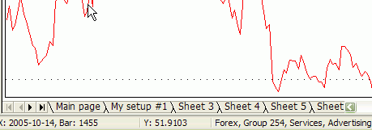
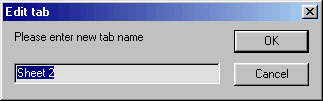
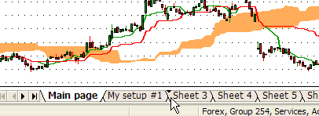
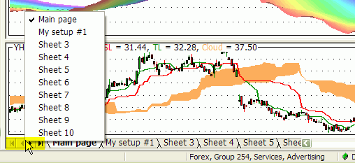
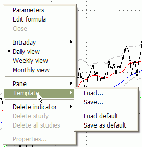
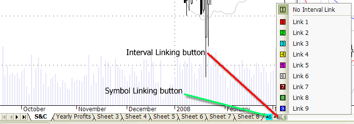
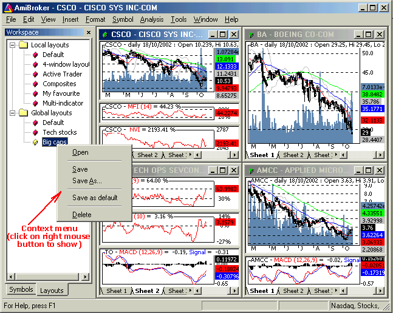

AmiBroker manages multiple chart sheets and multi-window layouts with the ability to quickly load/save them. This feature enables you to quickly switch between different indicator sets, dramatically saving your time.
Chart sheets and templates
A chart sheet is a set of chart panes (with indicators) displayed within a single frame.
You can switch between different sheets by clicking on the tabs located in the bottom of the AmiBroker window, as shown in the following picture:

You can change the name of the tab by clicking on it with the RIGHT mouse button, so the following window appears:

You can change all four tab names (one by one) so they are more descriptive and relate to the contents of the sheet.
You can scroll tabs using arrow buttons and you can rearrange them by dragging (click on a tab, hold down the left mouse button, and drag to the desired position - an arrow will show the target position).

You can also access any sheet quickly by clicking with the RIGHT mouse button over the arrows to pop up the menu that lists all tabs and allows immediate selection (without scrolling)

The next step is to set up your sheets according to your personal preference. Just add/remove chart panes to/from each sheet. This way you can have up to 60 different indicator sets that you can recall very quickly by switching to the appropriate tab. The actual number of sheets is definable in Tools->Preferences->Charting "Number of chart sheets"
The complete set of chart sheets is called a "template" and you can make this setup permanent just right-click on the chart and select the following menu item (Template->Save, Template->Save as default):
The default template is used if you create a new window (Window->New)
You can also load a previously saved template by choosing Template->Load from the chart's right mouse button menu.
In addition to the old local template format, a new one
has been added with a .chart extension that
keeps not only window sizes and formula references (paths) but also formulas
themselves, so all you need to do is to save your chart to one file (Chart
Template, Complete *.chart) and copy that file onto a different computer, and the chart will be
recreated with all formulas linked to it.
To save a chart in the new format, do the following:

1. Click with the RIGHT MOUSE button over the chart and select Template->Save...
2. In the file dialog, "Files of type" combo, select "Chart
Template,
Complete (*.chart)"
3. Type the file name and click Save.
To load a previously saved complete chart, do the following:
1. Click with the RIGHT MOUSE button over the chart and select Template->Load...
2. In the file dialog, select the previously saved *.chart file and press "Open"
Note: The procedure AmiBroker performs internally is as follows: When you save the
chart into the new format, it saves an XML file with:
a) names of all sheets, panes, their sizes, locations, and other settings
b) paths to all formulas used by all panes
c) the text of the formulas themselves
When you load the chart in the new format, AmiBroker:
a) sets up the sheets/panes according to the information stored in the file
b) for each formula stored in the file, it checks if the same formula already exists
on the target computer:
- if it does not exist - it will create one
- if it exists and the contents are identical to the formula stored in the .chart
file, it will do nothing
- if it exists and the contents are different, then it will create a NEW formula
file with an _imported.afl suffix (so the old file is not touched) and will reference
the pane to the _imported.afl formula instead.
IMPORTANT NOTE: If you use any #include files, AmiBroker will store the
contents of the include files as well inside the chart file and will attempt to
recreate them on the
target machine. Please note that in the case of includes, it will check if it exists
and if it is different. If both conditions are met (a different file already exists),
it will ask whether to replace or not. If you choose to replace, it will replace and
make a backup of the existing one with a .bak extension. If you are using any files
in "standard include files" and include them using <> braces, AmiBroker will
restore the files in the target machine's standard include folder as well (even if the
standard
include folder path is different on the source machine).
The new .chart format is intended to be used to port charts between
different computers. For storing layouts/templates on a local computer, you should
rather use old formats as they consume much less space (they store only references, not
the formulas themselves). One may, however, use the new format for archiving purposes
as it keeps formulas and all references in one file, which is very convenient for
backups.
Now it is possible to link chart windows either by symbol and/or by time interval. To link chart windows, use the linking buttons located in the bottom of the chart window as shown in the picture below:

Grey "S" and "I" buttons mean no link. Any other color (red, green, magenta, yellow, pink, white, brown, dark green, blue) means that a given chart belongs to a given color-coded linked group. All windows with the same color link will switch symbol and/or interval simultaneously.
If you are using multiple monitors, you can find it useful to display AmiBroker charts on multiple windows. To make it easy, AmiBroker 5.10 introduces "floating" chart windows. Normally all chart windows live inside the main AmiBroker application window. If you make a chart window floating, you are essentially detaching the chart window from the parent AmiBroker frame, so you can move it outside, for example, to another monitor.
You can switch between normal and floating state using the Window menu as shown below:
The following video tutorial shows how to use floating windows and symbol linking in practice:
http://www.amibroker.com/video/FloatAndLink.html
Window layouts
A window layout is a complete set of multiple windows open, each with a different symbol, display interval, size, and set of chart sheets.
The picture below shows a 4-window layout, each with a different set of indicator panes. To the left, you can see the "Layouts" pane in the Workspace window showing the list of stored local and global layouts.

Using AmiBroker 4.20, you can now have an unlimited number of custom, multiple-window templates that can be switched between with just a double-click on the layout name in the "Layouts" tab of the Workspace window.
You can open, save, delete a layout by clicking on the Layout tree with the right mouse button and choosing the appropriate function. "Save As" option saves the current layout under a new name.
Local layouts are per-database, while Global layouts are visible from all databases.
Information saved in layouts include: window sizes and positions, maximized/minimized state, chart panes available on each sheet (independent for each window), selected bar interval, selected symbol, and selected chart sheet.
Most recently used layout can be saved on exit and on database switch automatically (see: Tools->Preferences->Miscellaneous "Save on exit: Layouts").
Note: since version 4.90, multiple windows can be switched not only using the old-style Window menu but also using the new MDI tabs. More on MDI tabs can be found in the "User-interface customization" chapter.